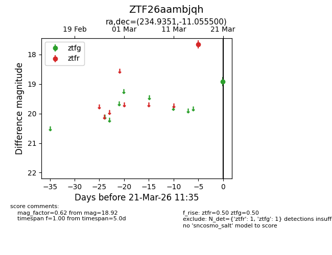
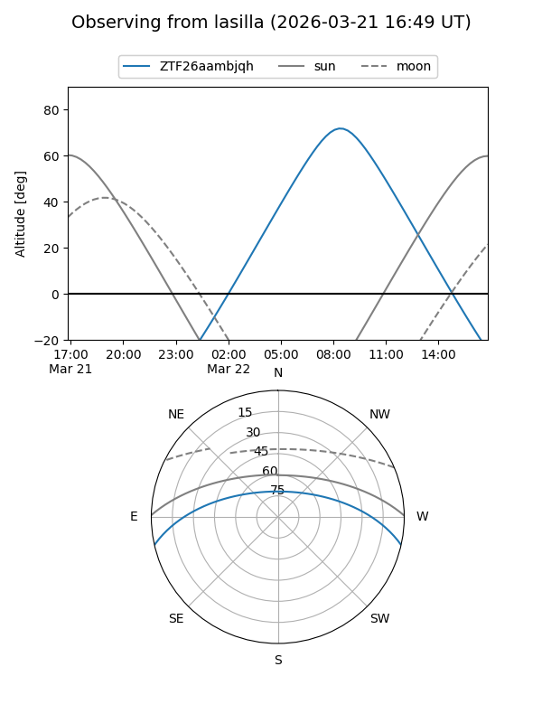
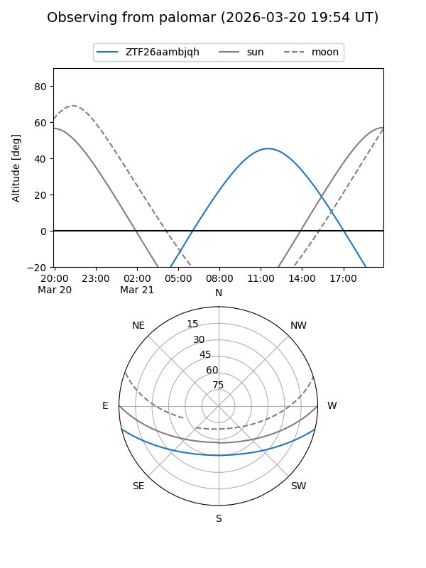

ZTF26aambjqh
Target ZTF26aambjqh at 2026-03-21 11:37
Aliases and brokers:
FINK: link
Lasair: link
ALeRCE: link
alt names
ZTF26aambjqh (ztf,fink_ztf)
Coordinates:
equatorial (ra, dec) = 234.9351,-11.05550
equatorial (HMS+DMS) = 15:39:44.43,-11:03:19.80
galactic (l, b) = (355.5313,+34.11837)
Flags:
Photometry:
last ztfg=18.92, ztfr=17.65
1 ztfg, 1 ztfr detections
Lightcurve

Visibility


Additional plots